walker's日志
1.1.
简介
1.2.
Todo
1.3.
work
1.4.
code
1.5.
FAQ
1.6.
md语法
1.7.
图解
1.8.
Gif测试
1.9.
iptv
1.10.
Git
1.11.
工作截图
1.12.
配置
1.13.
工具
1.14.
一天学会
1.15.
计划
本书使用 GitBook 发布
iptv
1.9.1.
iptv 相关架构
1.9.2.
发布和体验流程
1.9.3.
ismp结构
1.9.1. iptv 相关架构
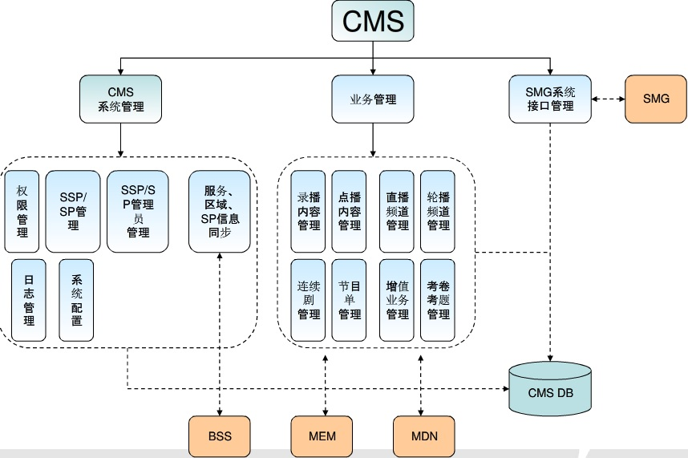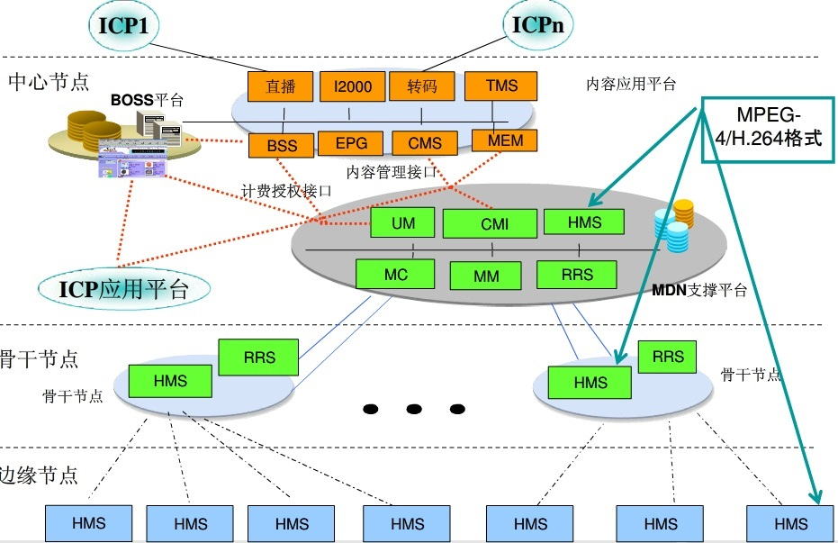
1.9.2. 发布和体验流程
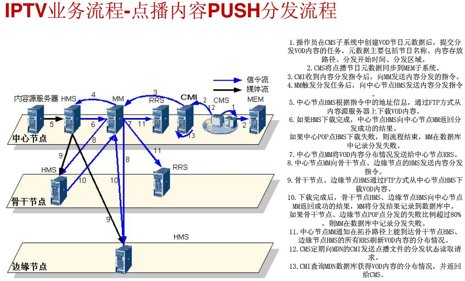
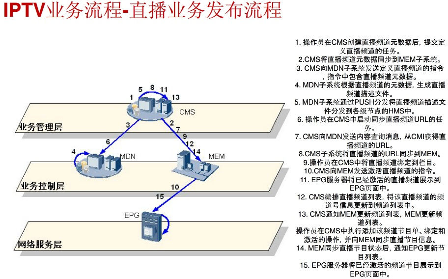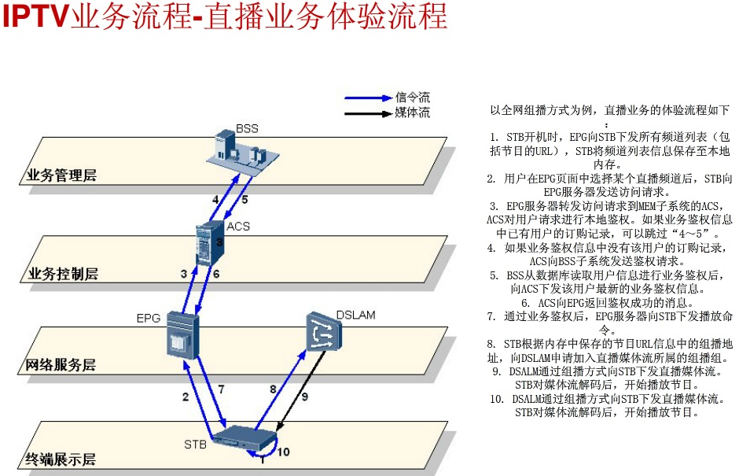
1.9.3. ismp结构
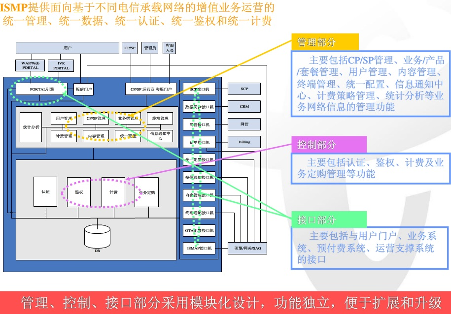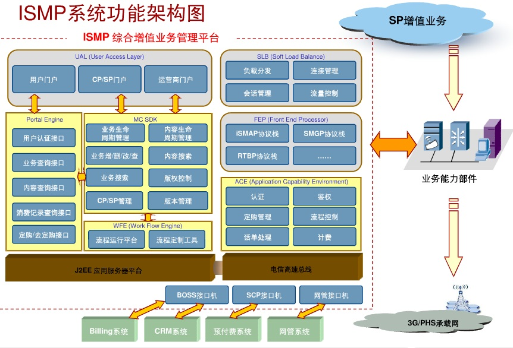
results matching "
"
No results matching "
"
 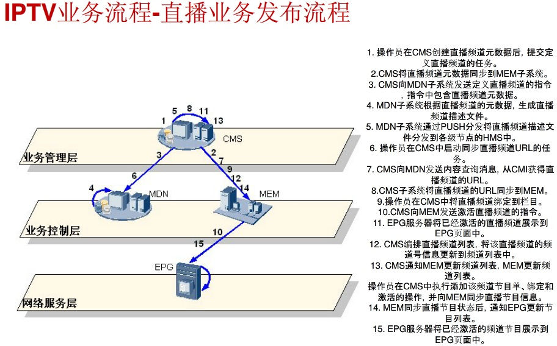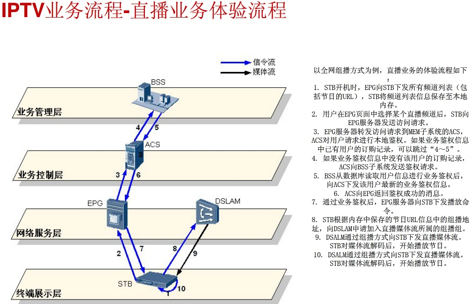
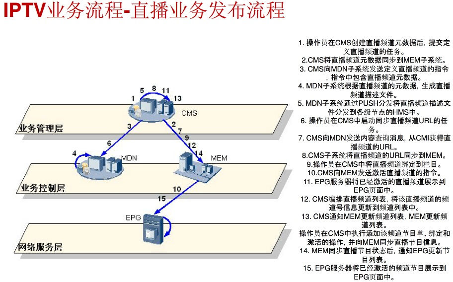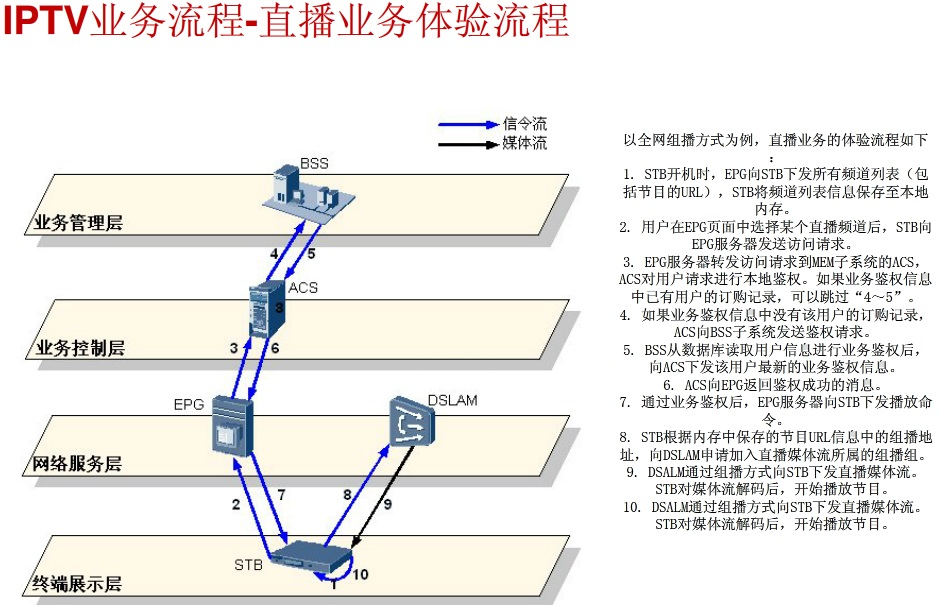